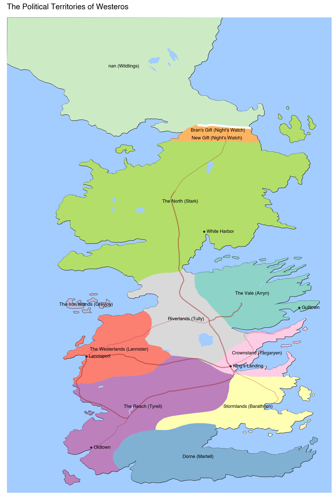

plotnine.geoms.geom_map¶
- class plotnine.geoms.geom_map(mapping: Aes | None = None, data: DataLike | None = None, **kwargs: Any)[source]¶
Draw map feature
The map feature are drawn without any special projections.
Usage
geom_map(mapping=None, data=None, stat='identity', position='identity', na_rm=False, inherit_aes=True, show_legend=None, raster=False, **kwargs)
Only the
dataandmappingcan be positional, the rest must be keyword arguments.**kwargscan be aesthetics (or parameters) used by thestat.- Parameters:
- mapping
aes, optional Aesthetic mappings created with
aes(). If specified andinherit.aes=True, it is combined with the default mapping for the plot. You must supply mapping if there is no plot mapping.Aesthetic
Default value
geometry
alpha
1color
'#111111'fill
'#333333'group
linetype
'solid'shape
'o'size
0.5stroke
0.5The bold aesthetics are required.
- data
dataframe, optional The data to be displayed in this layer. If
None, the data from from theggplot()call is used. If specified, it overrides the data from theggplot()call.- stat
stror stat, optional (default:stat_identity) The statistical transformation to use on the data for this layer. If it is a string, it must be the registered and known to Plotnine.
- position
stror position, optional (default:position_identity) Position adjustment. If it is a string, it must be registered and known to Plotnine.
- na_rmbool, optional (default:
False) If
False, removes missing values with a warning. IfTruesilently removes missing values.- inherit_aesbool, optional (default:
True) If
False, overrides the default aesthetics.- show_legendbool or
dict, optional (default:None) Whether this layer should be included in the legends.
Nonethe default, includes any aesthetics that are mapped. If abool,Falsenever includes andTruealways includes. Adictcan be used to exclude specific aesthetis of the layer from showing in the legend. e.gshow_legend={'color': False}, any other aesthetic are included by default.- rasterbool, optional (default:
False) If
True, draw onto this layer a raster (bitmap) object even ifthe final image is in vector format.
- mapping
Notes
This geom is best suited for plotting a shapefile read into geopandas dataframe. The dataframe should have a
geometrycolumn.
Examples¶
[1]:
import pandas as pd
import geopandas as gp
from plotnine import (
ggplot,
aes,
geom_map,
geom_text,
labs,
scale_fill_brewer,
scale_x_continuous,
scale_y_continuous,
scale_size_continuous,
coord_cartesian,
element_rect,
theme_void,
theme
)
The Political Territories of Westeros¶
Layering different features on a Map
Read data and select features in Westeros only.
[2]:
continents = gp.read_file('data/lands-of-ice-and-fire/continents.shp')
islands = gp.read_file('data/lands-of-ice-and-fire/islands.shp')
lakes = gp.read_file('data/lands-of-ice-and-fire/lakes.shp')
rivers = gp.read_file('data/lands-of-ice-and-fire/rivers.shp')
political = gp.read_file('data/lands-of-ice-and-fire/political.shp')
wall = gp.read_file('data/lands-of-ice-and-fire/wall.shp')
roads = gp.read_file('data/lands-of-ice-and-fire/roads.shp')
locations = gp.read_file('data/lands-of-ice-and-fire/locations.shp')
westeros = continents.query('name=="Westeros"')
islands = islands.query('continent=="Westeros" and name!="Summer Islands"')
lakes = lakes.query('continent=="Westeros"')
rivers = rivers.query('continent=="Westeros"')
roads = roads.query('continent=="Westeros"')
wg = westeros.geometry[0]
bool_idx = [wg.contains(g) for g in locations.geometry]
westeros_locations = locations[bool_idx]
cities = westeros_locations[westeros_locations['type'] == 'City'].copy()
Create map by placing the features in layers in an order that limits obstraction.
The GeoDataFrame.geometry.centroid property has the center coordinates of polygons, we use these to place the labels of the political regions.
[3]:
# colors
water_color = '#a3ccff'
wall_color = 'white'
road_color = 'brown'
# Create label text by merging the territory name and
# the claimant to the territory
def fmt_labels(names, claimants):
labels = []
for name, claimant in zip(names, claimants):
if name:
labels.append('{} ({})'.format(name, claimant))
else:
labels.append('({})'.format(claimant))
return labels
def calculate_center(df):
"""
Calculate the centre of a geometry
This method first converts to a planar crs, gets the centroid
then converts back to the original crs. This gives a more
accurate
"""
original_crs = df.crs
planar_crs = 'EPSG:3857'
return df['geometry'].to_crs(planar_crs).centroid.to_crs(original_crs)
political['center'] = calculate_center(political)
cities['center'] = calculate_center(cities)
# Gallery Plot
(ggplot()
+ geom_map(westeros, fill=None)
+ geom_map(islands, fill=None)
+ geom_map(political, aes(fill='ClaimedBy'), color=None, show_legend=False)
+ geom_map(wall, color=wall_color, size=2)
+ geom_map(lakes, fill=water_color, color=None)
+ geom_map(rivers, aes(size='size'), color=water_color, show_legend=False)
+ geom_map(roads, aes(size='size'), color=road_color, alpha=0.5, show_legend=False)
+ geom_map(cities, size=1)
+ geom_text(
political,
aes('center.x', 'center.y', label='fmt_labels(name, ClaimedBy)'),
size=8,
fontweight='bold'
)
+ geom_text(
cities,
aes('center.x', 'center.y', label='name'),
size=8,
ha='left',
nudge_x=.20
)
+ labs(title="The Political Territories of Westeros")
+ scale_fill_brewer(type='qual', palette=8)
+ scale_x_continuous(expand=(0, 0, 0, 1))
+ scale_y_continuous(expand=(0, 1, 0, 0))
+ scale_size_continuous(range=(0.4, 1))
+ coord_cartesian()
+ theme_void()
+ theme(figure_size=(8, 12), panel_background=element_rect(fill=water_color))
)

[3]:
<Figure Size: (800 x 1200)>
Credit: cadaei of the cartographersguild website forum.